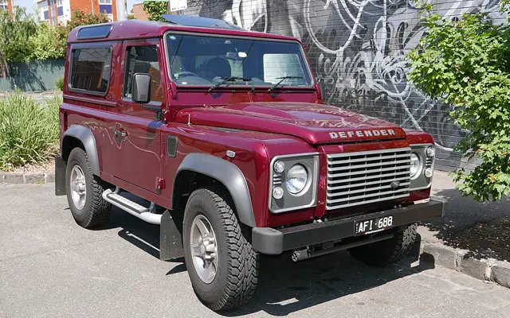

Par Motor › Precios por modelo › Land Rover Defender
Precio de segunda mano · noviembre de 2026¿Cuánto vale un Land Rover Defender de segunda mano?

Precio justo estimado de un Land Rover Defender usado en España, año por año, con los kilómetros normales para su edad y en buen estado: de 13.300 € a 73.600 €. Para tasar el tuyo con sus kilómetros reales y su estado, usa el tasador gratis.
Precios del Land Rover Defender por año
Defender (clásico) (2007–2016)
Precio de nuevo: 2.4 TD4 122 CV, 32.000 € · 2.2 TD4 122 CV, 34.000 €
| Año | Km normales | 2.4 TD4 122 CV · Diésel | 2.2 TD4 122 CV · Diésel |
|---|---|---|---|
| 2016 | 100.000 km | 21.000 € | 22.300 € |
| 2015 | 100.000 km | 19.900 € | 21.200 € |
| 2014 | 100.000 km | 19.000 € | 20.100 € |
| 2013 | 100.000 km | 18.000 € | 19.100 € |
| 2012 | 100.000 km | 17.100 € | 18.200 € |
| 2011 | 100.000 km | 16.300 € | 17.300 € |
| 2010 | 100.000 km | 15.500 € | 16.400 € |
| 2009 | 100.000 km | 14.700 € | 15.600 € |
| 2008 | 100.000 km | 14.000 € | 14.900 € |
| 2007 | 100.000 km | 13.300 € | 14.100 € |
Defender (2020) (2020–hoy)
Precio de nuevo: D200 3.0 (microhíbrido) 200 CV, 62.000 € · P300 2.0 300 CV, 65.000 € · P400e (enchufable) 404 CV, 78.000 €
| Año | Km normales | D200 3.0 (microhíbrido) 200 CV · Diésel | P300 2.0 300 CV · Gasolina | P400e (enchufable) 404 CV · Híbrido enchufable |
|---|---|---|---|---|
| 2026 | 10.000 km | 62.500 € | 68.100 € | 73.600 € |
| 2025 | 30.000 km | 55.400 € | 60.500 € | 65.300 € |
| 2024 | 50.000 km | 52.700 € | 57.500 € | 62.100 € |
| 2023 | 70.000 km | 50.100 € | 54.600 € | 59.000 € |
| 2022 | 90.000 km | 43.800 € | 51.900 € | 56.100 € |
| 2021 | 100.000 km | 41.100 € | 47.400 € | 51.200 € |
| 2020 | 100.000 km | 41.700 € | 42.200 € | 45.600 € |
Kilómetros normales: 15.000 al año en gasolina, híbridos y eléctricos, y 20.000 en diésel, con un máximo de 100.000 km (por encima no tasamos: el precio depende demasiado del historial de cada coche). Cifras redondeadas a 100 €.
Preguntas frecuentes
¿Cuánto vale un Land Rover Defender de segunda mano?
Según el año, la versión y los kilómetros, un Land Rover Defender usado vale hoy de 13.300 € a 73.600 € en España. El más barato de nuestra tabla es un 2.4 TD4 de 2007 (13.300 €) y el más caro un P400e (enchufable) de 2026 (73.600 €). Son precios justos estimados entre particulares y profesionales, con los kilómetros normales para su edad y en buen estado.
¿Cuánto valor pierde un Land Rover Defender al año?
Con unos años encima, un Land Rover Defender pierde alrededor de un 8 % de su valor cada año (calculado sobre el D200 3.0 (microhíbrido) de la generación Defender (2020)). Los primeros años la caída es mayor y a partir de los 70.000 km se acelera.
¿Qué motorizaciones tiene el Land Rover Defender?
En nuestra base de datos hay versiones diésel, gasolina y híbrido enchufable, en 2 generaciones: Defender (clásico) y Defender (2020).
¿Cómo sé si me piden demasiado por un Land Rover Defender?
Abre el tasador de Par Motor, elige el Land Rover Defender, el año y los kilómetros reales, y escribe lo que te piden. Te diremos si está por debajo del precio justo (chollo) o por encima (caro). Es gratis y no pide registro ni matrícula.
Historia y curiosidades
Otros Land Rover
Compara su coste real
El precio de compra es solo una parte. Mira cuánto te costaría al mes con combustible, seguro, neumáticos, mantenimiento y lo que pierde de valor.
Abrir el comparador →